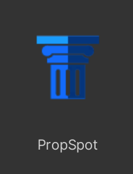
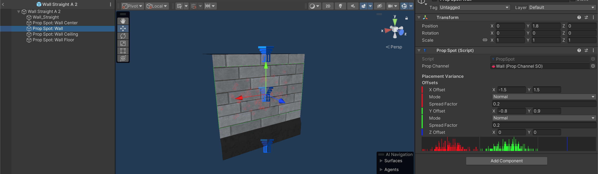
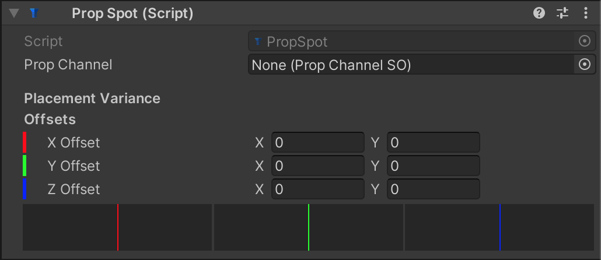
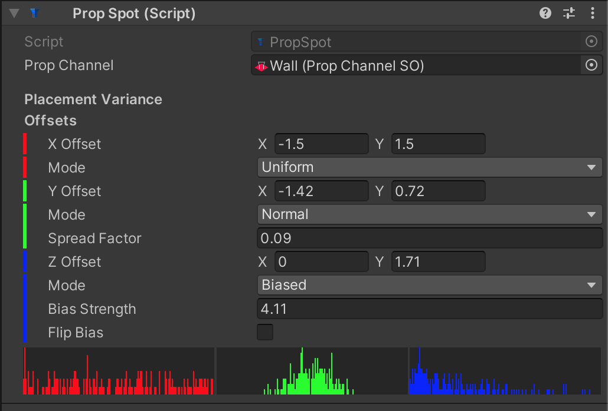

Prop Spots

The PropSpot component determines where props can be placed on your modules. You can add as many of these as you need. When a prop is placed on a Prop Spot, the props pivot point will be aligned with that of the Prop Spot. If the Prop Spot is rotated, the prop will be too.

In this example “Wall Straight” module, I’ve placed four Prop Spots:
- At the base of the wall on the floor using the “Wall Floor” Prop Channel
- At the top of the wall at the ceiling using the “Wall Ceiling” channel
- At the center of the wall using the “Wall Center” channel for props that should be mounted directly to the center of the wall
- Another at the center of the wall using the “Wall” channel which has placement variances which allow a prop to be placed anywhere on the wall surface.
Defining a Prop Spot
When you first add a Prop Spot component to your prefab, it will look like this:

Prop Channel
Specify which Prop Channel this Prop Spot uses. Only props that use the same channel will be placed on this Prop Spot.
Placement Variance Offsets
By default a prop will be placed perfectly aligned with the Transform of the PropSpot. If you want to allow random offsets, you can adjust the allowable deviation in all 3 axes. The offsets are represented by Vector2s, with the first component (X) being the maximum negative offset in the corresponding axis, and the second component (Y) being the maximum positive offset. For example, if the X Offset is set to (-1.5, 1.5) then the prop may be offset on its x-axis by anywhere between -1.5 and 1.5 units. When you edit these values, the inspector will change accordingly, revealing new options:

Mode
Selects which random number generation method to use:
Uniform
A random number where all possible results are equally likely to occur.
Normal
A normal distribution is weighted toward the center like a bell curve, where values in the middle are much more likely, and values near the extremes are very unlikely. Spread Factor controls how tightly clustered around the center the results can be. A lower number decreases the spread. 0 is the same as having no spread at all. A higher number flattens the curve. A value of 1 is basically Uniform, and higher values start to make the extremes the most likely results.
Biased
A sort of exponential weighted distribution where values on one end of the range are most likely, and the opposite end are very unlikely. Bias Strength controls how tightly the results tend toward the weighted extreme. A value of 0 is the same as Uniform, and the higher the value, the more likely the weighted extreme becomes, and values become less likely the further away they are. Flip Bias reverses the distribution so the other end is the more likely result.